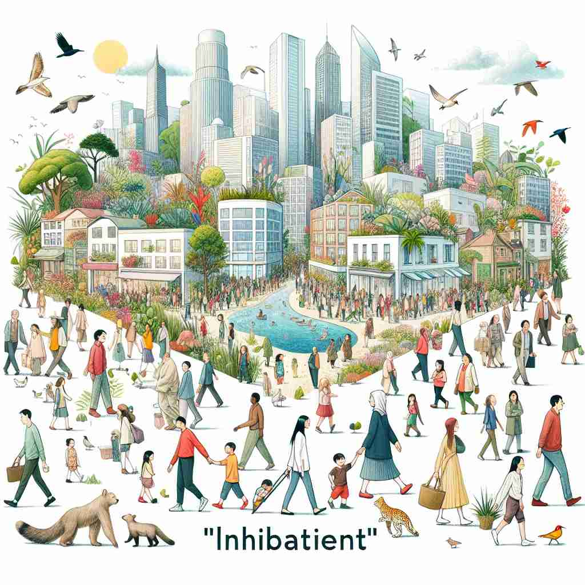

💬 The city inhabitants enjoy their lively neighborhood. 城市居民享受他们热闹的社区。

💬 The children played outside, happy to be the inhabitants of the neighborhood. 孩子们在外面玩耍，快乐地成为这个社区的居民。
💬 The city inhabitants enjoy their lively neighborhood. 城市居民享受他们热闹的社区。
💬 The children played outside, happy to be the inhabitants of the neighborhood. 孩子们在外面玩耍，快乐地成为这个社区的居民。
🧠 将'inhabitant'想象成一个'住在某处的人或物'。无论是人类、动物还是植物，只要长期居住或存在于某个地方，就可以被称为该地的'inhabitant'。这个核心概念可以帮助你理解和记忆该词在不同语境下的用法，包括实际的居民、生态系统中的物种，甚至比喻性地描述某个角色或职位的长期担任者。
🔈 [ɪn'hæbɪt(ə)nt]
🗝️ n. a person or animal that lives in a particular place 生物指在特定地方生活的人或动物。
🎭 在一片繁茂的森林中，一只狐狸在密林间穿梭，它的家就在这片绿意盎然的土地上。与此同时，森林里的小木屋中，一位伐木工人每天忙碌地工作。他们都是这片森林的inhabitants，生活在同一个自然环境中。
💬 The inhabitants of this village are mostly farmers. 这个村庄的居民大多是农民。
🌳 由词根 'habit'（居住）加上前缀 'in-'（在...里面）和名词后缀 '-ant' 组成，表示 '在某地居住的人'。
💡 记住 'inhabitant' 时，可以联想为 '住在里面的人'，将 'in-'（在里面）和 'habit'（居住）的概念结合，容易理解为在某地固定生活的人。
🗝️ n. a permanent resident of a place 某地的永久居民
🎭 在一个宁静的小村庄，老张已经在这里住了四十多年。他认识每一位村民，也看着这里的新生儿长大成人。作为村庄的inhabitant，他对这里的一草一木都充满了感情。
💬 She's been an inhabitant of this town for over 50 years. 她已经在这个城镇居住超过50年了。
🤔 强调长期居住的特性
🗝️ n. a plant or animal that is native to or commonly found in a particular environment 一种原产于或常见于特定环境的植物或动物
🎭 在广阔的非洲草原上，成群的羚羊在奔跑。它们是这个生态系统内的惯常inhabitants，适应了这里的气候和食物链，与草原上的其他生命和谐共存。
💬 Polar bears are natural inhabitants of the Arctic. 北极熊是北极的自然栖息者。
🤔 扩展到生态环境中的生物
🗝️ n. someone who occupies a particular position or role 某个特定职位或角色的占有者
🎭 在一个大型企业的会议室中，李女士以自信的姿态坐在经理座位上。作为销售团队的leader，她是这个关键决策位置的inhabitant，负责带领团队实现目标。
💬 He was a long-time inhabitant of the CEO's office. 他是首席执行官办公室的长期居民。
🤔 比喻性用法，将角色或职位视为一个'居住地'